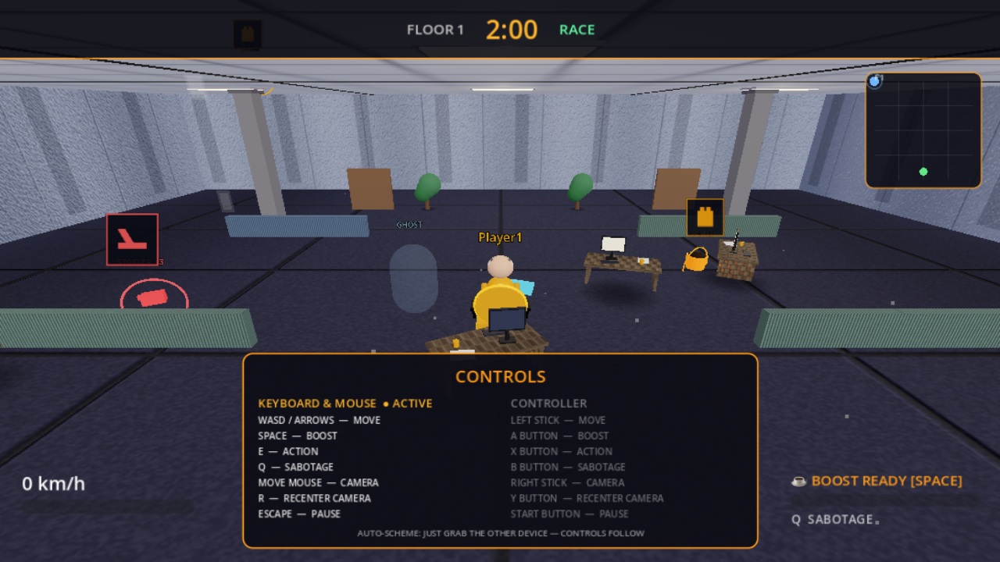

Evacuate the ordinary.
An absurdly official safety system for an unofficial chair race.
Keep the escape route clear.
This is a UI and signage composition—not a new gameplay render. The center of the actual screen stays open for the chair, hazards, and route ahead.
One palette. Every surface.
Bg
#171918Surface
#272b27Ink
#f3f0dfAccent
#ff8b38Secondary
#b6dd67Powder-coated metal · bone paper · charcoal rubber
Abstract shape/material specimens. Broad surfaces, readable edges, no noisy micro-patterns.
Art direction, not expensive effects.
Industrial signage and bold silhouettes. Large floor numbers, bone-white walls with limited orange accents. Use broad route markers, never repeating high-frequency hazard stripes across the floor. No neon wash.
- Retain GL Compatibility and the existing quality presets.
- Use shared material resources; duplicate before instance animation.
- Keep decorative props out of collision and checkpoint paths.
- No additional real-time shadow lights, SSAO, or bloom dependency.
- Ceiling decorations cast no shadows. Keep ground detail above the slab.
Corporate emergency Background: #171918 Surface: #272b27 Text: #f3f0df Accent: #ff8b38 Secondary: #b6dd67 Industrial signage and bold silhouettes. Large floor numbers, bone-white walls with limited orange accents. Use broad route markers, never repeating high-frequency hazard stripes across the floor. No neon wash.

The game works. The surfaces compete.
The baseline has coarse wall texture, heavy floor seams, flat lighting, and scattered HUD elements. Simplifying these comes before adding more tiny props.
First implementation slice: calmer walls and carpet, deliberate warm/cool light separation, unified signage, and a compact HUD. Gameplay, controls, elevator positions, and LAN behavior stay intact.
Assumptions: stylized office comedy, laptop/mobile performance, existing orange identity. HTML specimens are concepts; the image at left is the real game. No Blender or engine migration required.